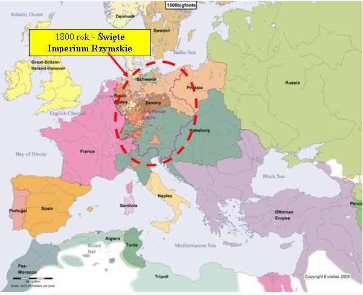
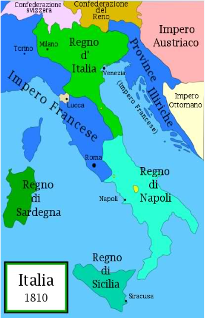
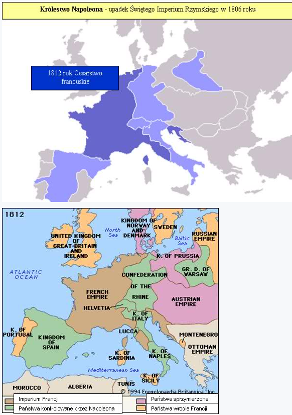

.
Rozdział 16
„I usłyszałem donośny głos mówiący ze świątyni do siedmiu aniołów: Idźcie i wylejcie siedem czasz gniewu Bożego na ziemię. (2) I wyszedł pierwszy, i wylał czaszę swoją na ziemię; i pojawiły się złośliwe i odrażające wrzody na ludziach, mających znamię zwierzęcia i oddających pokłon jego posągowi. (3) A drugi wylał czaszę swoją na morze; i przemieniło się w krew jakby z umarłego, i wszelkie stworzenie, żyjące w morzu, zginęło. (4) A trzeci wylał czaszę swoją na rzeki i źródła wód; i przemieniły się krew. (5) I usłyszałem anioła wód, mówiącego: Sprawiedliwy jesteś Ty, któryś jest i któryś był, święty, żeś taki wyrok wydał; (6) ponieważ oni wylali krew świętych i proroków. Ty dałeś im do picia także krew; zasłużyli na to. (7) I usłyszałem, jak ołtarz mówił: Tak, Panie, Boże Wszechmogący, prawdziwe i sprawiedliwe są twoje sądy. (8) A czwarty wylał czaszę swoją na słońce; i dana mu została moc palenia ludzi żarem. (9) I byli ludzie popaleni wielkim żarem, i bluźnili imieniu Boga, który ma moc nad tymi plagami, a nie upamiętali się, by mu oddać chwałę. (10) A piąty wylał czaszę swoją na tron zwierzęcia; i pogrążyło się królestwo jego w ciemnościach, i gryźli ludzie z bólu swoje języki. (11) I bluźnili Bogu niebieskiemu z powodu swoich bólów i z powodu swoich wrzodów, i nie upamiętali się w swoich uczynkach. (12) A szósty wylał czaszę swoją na wielką rzekę Eufrat; i wyschła jej woda, aby można było przygotować drogę dla królów ze wschodu słońca. (13) I widziałem trzy duchy nieczyste jakby żaby wychodzące z paszczy smoka i z paszczy zwierzęcia, i z ust fałszywego proroka; (14) a są to czyniące cuda duchy demonów, które idą do królów całego świata, aby ich zgromadzić na wojnę w ów wielki dzień Boga Wszechmogącego. (15) Oto przychodzę jak złodziej; błogosławiony ten, który czuwa i pilnuje szat swoich, aby nie chodzić nago i aby nie widziano sromoty jego. (16) I zgromadził ich na miejscu, które po hebrajsku nazywa się Armagedon. (17) A siódmy wylał czaszę swoją w powietrze; i rozległ się ze świątyni od tronu donośny głos mówiący: Stało się. (18) I nastąpiły błyskawice i donośne grzmoty, i wielkie trzęsienie ziemi, jakiego nie było, odkąd człowiek istnieje na ziemi; tak potężne było to trzęsienie. (19) I rozpadło się wielkie miasto na trzy części, i legły w gruzach miasta pogan. I wspomniano przed Bogiem o wielkim Babilonie, że należy mu dać kielich wina zapalczywego gniewu Bożego. (20) I znikły wszystkie wyspy i gór już nie było. (21) I spadły z nieba na ludzi ogromne centnarowe kawały gradu; a ludzie bluźnili Bogu z powodu plagi gradu, gdyż plaga ta była bardzo wielka.” (Objawienie 16:1-20).
SIÓDMA TRĄBA.
Siódma trąba zawiera SIEDEM OSTATECZNYCH CZASZ GNIEWU BOŻEGO.Wstępnie wspomniano już o siódmej trąbie w Objawieniu 11:15-19, po czym mieliśmy przerwę w opisie ciągłości wydarzeń, aż do tego momentu…
Zgodnie ze schematem zawartym w trąbach, w takiej samej kolejności:
1 trąba / czasza - ziemia,
2 trąba / czasza - morze,
3 trąba / czasza - rzeki,
następuje wylewanie czasz gniewu Bożego, łatwo zauważyć podobieństwo.
Trąby dotykały Imperium Rzymskiego, natomiast czasze dotykają Imperium Rzymskokatolickiego (papiestwo).
W wyniku Rewolucji Francuskiej i trwających w Europie w latach 1798-1815 wojen napoleońskich nastąpiły bardzo znaczące zmiany terytorialne na niemal całym obszarze kontynentu europejskiego, gdyż ten okres to właśnie czas wylania na odstępczy kościół pierwszych trzech czasz gniewu Bożego.
Tak jak wcześniej Bóg ukarał starożytny Babilon, tak też teraz karze nowożytny Babilon, który prześladował dzieci Boże (świątynię Bożą).
„Wyostrzcie strzały, namaśćcie tarcze! Pan pobudził ducha królów medyjskich, gdyż jego plan skierowany jest przeciwko Babilonowi, aby go zniszczyć; taka jest, bowiem pomsta Boga, pomsta za jego świątynię.” (Jeremiasza 51:11).
Pierwsza czasza.
„A wrzód złośliwy, bolesny, wystąpił na ludziach, co mają znamię Bestii, i na tych, co wielbią jej obraz.” (16:2 BT).
W księdze Objawienia 8:7 opisane zostało wielkie spustoszenie, jakie nawiedziło wielki obszar Imperium Rzymu w V wieku, na skutek najazdów zachodnich Gotów (Wizygoci) pod dowództwem Alaryka, kiedy to Rzym, stolica potężnego i dumnego państwa, stał się po raz pierwszy od ponad 600 lat łupem barbarzyńców i pastwą płomieni.
„Nagle, o północy, przeraźliwy głos gotyckich trąb zbudził zniewieściałych Rzymian ze snu. Miasto opanował strach. Po kilku dniach bogata stolica świata stała się miastem żebraków. Zrabowano kosztowności, z domów buchały kłęby dymu i płomienie ognia, a gotyccy wojownicy dumnie paradowali po mieście nawieszawszy na sobie rozmaite ozdoby i damską biżuterię. Niewiasty i panny pogwałcono, mężowie i bracia leżeli pozabijani na ulicach, a ci, którym udało się przeżyć, błąkali się po kraju jak żebracy. Wyglądało to tak, jakby Rzym w tych dniach odbierał pomstę za niezliczone okrucieństwa, jakich się dopuszczał przez całe stulecia nad narodami, na skutek swej tyranii i żądzy ziemi…” (Spener, „Historia Światowa”, tom III, strona 48).
Alaryk w V wieku spadł na Rzym niby jastrząb, pustosząc Bałkany i Italię. Na końcu XVIII wieku, zgodnie ze schematem:
trąba – ziemia – czasza, sytuacja się powtórzyła…
W 1793 roku, a więc w 1260 lat po edykcie Justyniana, we Francji, która była potężnym sojusznikiem papiestwa - pierwszą córą kościoła - ukazał się dekret wymierzony w obalenie unii kościoła i państwa.
W 1798 roku poszedł za nim decydujący cios świeckiego miecza wymierzony w papiestwo, który oznaczał koniec epoki rozpoczętej 1260 lat wcześniej (538).
Ateistyczna Rewolucja Francuska pozbawiła papiestwo politycznej mocy w 1798 roku, kiedy Francuzi obalili Świętą Inkwizycję. W tym samym roku ich wojska zajęły Rzym, obalając świeckie rządy papieskie.
Papież, który przez tyle wieków posyłał wojska, aby prześladować wierzących, dostał się w ręce niewierzących.
Nieszczęście, jakie spotkało papieża, położyło kres wielowiekowej politycznej supremacji biskupa Rzymu i zadało papiestwu pierwszy poważny cios.
„15 lutego 1798 roku, Francja podjęła interwencję zbrojną. Generał Berthier zajął Rzym, pozbawiając papieża władzy świeckiej” (Jean Mathieu-Rosay).
W 1798 roku, Berthier – francuski generał uwięził papieża, który zmarł w więzieniu, a absolutna władza papiestwa została obalona.
Tak skomentował to wydarzenie jezuicki duchowny Joseph Rickaby:
„Połowa Europy sądziła, że wraz z papieżem także papiestwo poniosło śmierć” (Lectures on the History of Religion, London: Catholic Truth Society, 1910, t.3, wykład 24).
LeRoy Froom, napisał:
„Nie zapominajmy o karzącym wymiarze Rewolucji Francuskiej. Jej dewastujące rezultaty były sądem bez precedensu w dziejach ludzkości, sądem skierowanym przede wszystkim przeciw kościołowi rzymskiemu w reakcji na jego ekscesy...”
W latach 1798 – 1799 Państwo Kościelne stało się Republiką Rzymską.
Przypomnijmy sobie także, jak papież Klemens XI w 1717 roku, nazwał Nowy Testament Pisma Świętego „szerzącą się zarazą”!
Niedługo potem jego słowa odwróciły się przeciwko papiestwu i spadły na ich głowy. Od 1798 roku, jak grzyby po deszczu, powstawać zaczęły Towarzystwa Biblijne, wydające Pismo Święte w językach narodowych. Jednym z nich było Brytyjskie i Zagraniczne Towarzystwo Biblijne, działające w Polsce od 1814 roku.
„1797-II-III. Po pokonaniu armii papieskiej Bonaparte zmusza papieża Piusa VI do zawarcia pokoju w Tolentino (20.II) i zapłacenia kontrybucji. W następnym roku (czyli w 1798 – PG) państwo papieskie przestaje istnieć...(W roku) 1798 - Francuzi zajmują Rzym, proklamują Republikę Rzymską. Papież Pius VI zostaje jako jeniec wywieziony do Francji (III)” (Dzieje świata, praca zbiorowa, str. 285, Ludowa Spółdzielnia Wydawnicza, 1981).
„10 lutego 1798 roku, pod pretekstem obrazy francuskiego ambasadora we Włoszech, generał Berthier, słynny dowódca sztabu wojsk napoleońskich, wkroczył na czele swojej armii do Rzymu i aresztował papieża. Sędziwy biskup został aresztowany w nocy 20 lutego, w dwudziestą ósmą rocznicę swojego pontyfikatu. Z jego palca zdjęto pierścień władzy, jego dobra skonfiskowano i sprzedano, państwo papieskie zostało rozwiązane, a Rzym ogłoszony republiką. Papieża wywieziono do Francji, gdzie zmarł w niewoli, wyczerpany trudami podróży i przygnębieniem, 29 sierpnia 1799 roku, w Walencji. Przez dłuższy czas papieski tron pozostawał pusty.” (Dzieje świata, praca zbiorowa, Ludowa Spółdzielnia Wydawnicza, 1981).
Rok później rozpoczęły się nieprzerwane, piętnastoletnie rządy francuskie. Polityka Napoleona wobec papiestwa opierała się na chęci uczynienia z niej posłusznego narzędzia swej władzy, oraz gotowości użycia przemocy w razie oporu. Siłę skierował najpierw przeciw Państwu Kościelnemu, zajmując księstwa Benewentu i Ponte Corvo – pierwsze przekazał Talleyrandowi, drugie marszałkowi Bernadotte, chcąc zmusić papieża do uległości.
Natomiast ludzie, którzy utożsamiali papiestwo z okrucieństwem inkwizytorów, obłudą duchownych, intrygami jezuitów, dali upust swoim emocjom.
Oto w skrócie, co miedzy innymi działo się w tamtym okresie.
Państwo przejmowało wszystkie posiadłości kościelne. Uzbrojone chłopstwo napadało na szlacheckie posiadłości i kościoły. Zabijano panów feudalnych i księży. Zniesiono wszystkie przywileje szlachty i duchowieństwa, łącznie z przywilejem niepłacenia podatków.
Spalono setki klasztorów, plebanii, kościołów i należących do katolickich dostojników pałaców i gospodarstw, niszczono w nich wszelkie oznaki kultu – obrazy, pomniki, rzeźby, relikwie. Zniesiona została dziesięcina, kapłańskie przywileje i chłopskie powinności względem Kościoła. Duchowieństwo – podobnie jak szlachta – zostało opodatkowane. Masowo porzucano wiarę katolicką. Kościół katolicki został zmarginalizowany i odsunięty od władzy.
Niezwykle interesującym faktem jest także to, że wielu historyków tamtego okresu porównało wydarzenia wtedy mające miejsce do wybuchu zakaźnej choroby wrzodowej. Na przykład:
- Edmund Burke potępił Rewolucję, jako:
„Złośliwa francuska dolegliwość”.
„Zakaźna plaga wymagająca jak najbardziej surowej kwarantanny”.
- Fitchett w książce „Jak Anglia ocaliła Europę” pisze, że europejskie władze spostrzegały francuską Rewolucję, jako:
„Polityczną zarazę, która groziła całej Europie i która musi zostać zahamowana za wszelką cenę.”
- Walter Scott w swojej książce „Życie Napoleona” opisał stan francuskich wydarzeń podczas tego okresu, jako:
„Pojawienie się bolących wrzodów, bezużytecznych i ohydnych, nadających się jedynie do chirurga w celu kuracji.”
- Lambert, który był francuskim dominikańskim mnichem i naocznym świadkiem Rewolucji opisał ją, jako:
„Okropny wrzód”.
„Wrzód niewierności”.
„Chory organizm pokryty wrzodami”.
- Niebuhr, wielki historyk, a kiedyś także ambasador papieskiego kościoła, mówi:
„Wybuch Francuskiej Rewolucji był lokalnym wybuchem choroby, która szczególnie dotknęła rzymskokatolickie narody i rządy Południowej Europy. Ogromny tryumf Rewolucji w rzymskokatolickich krajach spowodowany był rozpaczą, która wybuchła przeciw arystokracji i obłudnemu duchowieństwu”.
Powyższe słowa doskonale korespondują z tekstem Objawienia „wrzód złośliwy, bolesny, wystąpił na ludziach, co mają znamię Bestii, i na tych, co wielbią jej obraz” (16:2).
Państwo Kościelne utraciło bezpowrotnie legacje i posiadłości we Francji.
20 grudnia 1804 roku, Napoleon wezwał Papieża do Paryża, zmuszając go do niesienia w rękach korony cesarskiej, przez długość przejścia holu katedry Notre Dame w Paryżu.
Jednakże Napoleon nie pozwolił, aby papież go koronował, wedle zwyczaju mianowania cesarzy, który panował od 800 roku, gdy Karol Wielki został koronowany na pierwszego cesarza Świętego Cesarstwa Rzymskiego.
Napoleon wziął koronę z rąk papieża i samodzielnie umieścił ją na swojej głowę, oficjalnie pokazując, symbolizując, że papiestwo nie ma już władzy i mocy koronowania/ustanawiania głów państw w Europie.
Druga czasza.
„A drugi wylał czaszę swoją na morze; i przemieniło się w krew jakby z umarłego, i wszelkie stworzenie, żyjące w morzu, zginęło.” (16:3).
Zniszczenie z ziemi przenosi się na morze, analogicznie, jak podczas „drugiej Trąby” z ósmego rozdziału, kiedy to kolejny cios został zadany rzymianom przez wodza Wandalów - Genzeryka, tym razem na morzu. Po morskich bitwach Genzeryk stał się wówczas absolutnym panem morza, pustosząc bezkarnie Italię, Trację, Azję Mniejszą.
Po rewolucji francuskiej do władzy doszedł Napoleon Bonaparte i założył Pierwsze Cesarstwo Francuskie, które w okresie wojen napoleońskich objęło dużą część Europy zanim upadło w 1815.
W 1805 roku papież zaprotestował przeciw naruszeniu jego praw lennych przez Józefa Bonapartego, który nie zwrócił się do suwerena o zgodę na objęcie lenna. Odpowiedzią była zajęcie w maju wschodniego portu w Ankonie, a w rok później zachodniego w Civitavecchia, odcinając ich od morza.
Wojska francuskie swobodnie operowały również w pozostałych posiadłościach papieskich.
Kiedy Bonaparte nie miał już przeciwników w Środkowej Europie, nadal trwała wojna z Anglią. Zaczęły mnożyć się incydenty na morzach, w których Anglicy rewidowali i zagarniali statki francuskie. Protestancka Anglia stopniowo powiększała swoją władzę na morzach.
„Wielka Brytania była nieosiągalna dla wojsk francuskich, wobec absolutnego panowania jej wojennej floty na morzach” (Świat w wieku XIX).
Bitwa pod Trafalgarem, która odbyła się 21 października 1805 roku była kluczową bitwą morską w całym XIX wieku.
Starcie rozegrało się pomiędzy flotą angielską, a francusko-hiszpańską.
Bitwa ta stała się początkiem wielkiej hegemonii Brytyjczyków na morzach świata, przyczyniając się do powstania brytyjskiego imperium kolonialnego. Efektem tego był znaczny wzrost ruchu misjonarskiego, który charakteryzował następne 120 lat.
Zdobycie władzy na morzach przez Anglię oraz wojny Napoleońskie, podczas których zajmowano kluczowe porty, sprawiły, że papiestwo utraciło władzę na morzu, którą sprawowało od wielu wieków, a tym samym utraciło swoje katolickie imperium kolonialne, przestało kontrolować półwysep Iberyjski (Hiszpania i Portugalia), który stanowił o kolonialnym bogactwie Rzymu i który wcześniej dominował na morzach.
Rzym między innymi utracił swoje zamorskie kolonie w centralnej i południowej Ameryce, gdzie wcześniej ogniem i mieczem nawracał Indian na katolicyzm. To był dla nich ogromny cios, a kolonie wreszcie mogły ogłosić niepodległość.
„Do początku XIX wiek Hiszpania pozostawała bastionem europejskiego katolicyzmu z szeroko praktykowaną Inkwizycją, lecz za czasów wojen napoleońskich i wojen domowych będących ich skutkiem zniesiono ją. Rozkwit i ekspansja Hiszpanii były przede wszystkim związane z podbojami kolonialnymi w Ameryce, panowaniem na morzach i zdobyciem wielkich bogactw. Dzięki mocarstwowej polityce kraj stał się supermocarstwem w Europie Zachodniej. Stracił jednak tę pozycję na skutek osłabienia, upadku gospodarczego i wyniszczających (przegrywanych) wojen z Francją oraz utraty hegemonii na morzach na rzecz protestanckiej Wielkiej Brytanii.” (Świat w wieku XIX).
Trzecia czasza.
„A trzeci wylał czaszę swoją na rzeki i źródła wód; i przemieniły się krew.” (16:4).
W księdze Objawienia 8:10-11 (trzecia trąba) opisane zostało wielkie spustoszenie, jakie nawiedziło wielki obszar Imperium Rzymu na skutek najazdów krwawych Hunnów, którzy pod wodzą okrutnego Attyli, jak potop zalali kraje środkowej i zachodniej Europy, koncentrując swe działania głównie właśnie nad rzekami Europy…
Podobnie teraz w zgodzie ze schematem, wydarzenia miały miejsce w regionach alpejskich, w rejonach dolin rzecznych i źródeł wód (Austerlitz), szczególnie w północnych Włoszech, właśnie tam gdzie zwyciężał wódz Hunnów – Attyla.
Napoleona Bonaparte zmierzając do Wenecji, całkowicie nieświadomy roli, jaką spełniał w proroctwie, zawołał:
„Okażę się Attylą dla Wenecji.”
Około roku 450 Attyla poprowadził na Cesarstwo Rzymskie swoje hordy w liczbie 700.000 wojowników i zgotował Rzymowi straszliwe klęski nad rzekami: Marną, Rodanem i Padem. Rzeki te spłynęły krwią.
Teraz mamy analogiczną sytuację i bardzo podobny obszar geograficzny, tylko zamiast Attyli mamy Napoleona, który również zgromadził i poprowadził około 700.000 armię:
„Napoleon zgromadził na terenach Prus Wschodnich Wielką Armię, liczącą ok. 700 tys. ludzi i 24 czerwca 1812 roku przekroczył z nią rzekę Niemen, rozpoczynając swoją kolejną kampanię wojenną, w których stoczył łącznie sześćdziesiąt bitew.” (Świat w wieku XIX).
„I usłyszałem anioła wód, mówiącego: Sprawiedliwy jesteś Ty, któryś jest i któryś był, święty, żeś taki wyrok wydał; (6) ponieważ oni wylali krew świętych i proroków. Ty dałeś im do picia także krew; zasłużyli na to. (7) I usłyszałem, jak ołtarz mówił: Tak, Panie, Boże Wszechmogący, prawdziwe i sprawiedliwe są twoje sądy.” (16:5-7).
Napoleon poprowadził swoje oddziały przez Piemont i Tyrol i toczył liczne bitwy pokonując sprzymierzeńców papieża, często przy rzekach dosłownie zalewając je krwią. To były również te same miejsca, w których papieskie oddziały zabijały Albigensów i Waldensów za ich wiarę - ludzi, którzy nie chcieli się poddać władzy papieża, uważając, że jedynie Boga trzeba słuchać, co spotkało się to z okrutnymi prześladowaniami ze strony papiestwa, począwszy od XII do XVI wieku, za pośrednictwem powołanej przez Innocentego III i udoskonalonej przez Grzegorza IX inkwizycji - świętego oficjum, którą kościół wykorzystywał dla zapewnienia sobie władzy. Tylko na przestrzeni 30 lat (1540-1570) skazano na straszną śmierć, co najmniej 900 tysięcy protestantów podczas papieskiego prześladowania Waldensów, których najczęściej palono, przykładając krzyż do czoła, przeklinając i powierzając ich dusze diabłu.
Jak czytaliśmy wcześniej, plagi spadają także na obszar i ludzi, „co mają znamię Bestii, i na tych, co wielbią jej obraz” (16:2), gdzie, jako słowo „obraz”, użyto tutaj tego samego greckiego słowa, co w Objawieniu 13:14-15, czyli, „EIKON”, które jak się wcześniej już dowiedzieliśmy z rozdziału 13 odnosi się do odrodzonego Świętego Cesarstwa (Imperium) Rzymskiego (800/962 rok).

Imperium te przestało istnieć w 1806 roku za sprawą Napoleona, który „rozmontował” Święte Imperium Rzymskie.
Spośród ponad 380 księstw - państewek istniejących w Świętym Imperium Rzymskim wiernych papiestwu, przetrwało tylko 30 i to już niepodległych.
Po klęsce Austrii w wojnie z Francją większość książąt ogłosiła wystąpienie z Cesarstwa i utworzenie Związku Reńskiego.
„Po bitwie pod Austerlitz 2 grudnia 1805, cesarz Franciszek II został przymuszony przez Francuzów do zrzeczenia się godności cesarza rzymskiego i króla niemieckiego oraz zwolnienia swoich wasali ze zobowiązań wobec Cesarstwa. W ten sposób Święte Cesarstwo Rzymskie Narodu Niemieckiego przestało istnieć po ponad ośmiu wiekach funkcjonowania (800/962 rok).” (Świat w wieku XIX).
W roku 1809 Napoleon przyłączył również Państwo Kościelne do Francji.

Pius VII odpowiedział bullą zawierającą ekskomunikę. Został w odwecie aresztowany i przewieziony najpierw do Grenoble, a potem do Sawony i Fontainebleau. Ponownie skonfiskowano i odesłano do Paryża watykańskie archiwa.
Napoleon I Bonaparte zapanował niepodzielnie nad całą Europą Środkową i w krótkim czasie ukształtował nową jej mapę!
Tak, więc najpierw rewolucje, a później napoleońskie rządy drastycznie zmieniły sytuację Państwa Kościelnego.
„W wyniku podbojów i aneksji, Francja w 1812 roku powiększyła swe terytorium do 750 tys. kilometrów kwadratowych, mając 44 mln. mieszkańców. Przyłączone zostały do niej: Belgia, Holandia, prowincje niemieckie nad Morzem Północnym, prowincja lliryjska na Bałkanach, hiszpańska Katalonia oraz znaczna część terenów włoskich wzdłuż zachodnich wybrzeży Morza Śródziemnego, po Rzym włącznie. Ponadto w bezpośredniej zależności od Francji znajdowały się królestwa Hiszpanii i Włoch, niemiecki związek Reński, szwajcarska Republika Helwecka i Księstwo Warszawskie”.

Papiestwo nie zrezygnowało ze swoich roszczeń do władzy.
Próbowano przywrócić stary porządek z przed wojen Napoleońskich na Kongresie Wiedeńskim (1815 rok), kiedy to przywrócono władzę papieską w Państwie Kościelnym.
Jednakże żadne z mocarstw nie godziło się na pełną restytucję Państwa Kościelnego.
Terytorium Venaissin z Awinionem zajęła Francja, a tereny nad Padem Austria.
Potępione przez Rzym ruchy rewolucyjne i liberalizm miały być wspólnie zwalczane w ramach „kolektywnego systemu bezpieczeństwa”.
Europa miała być miejscem „permanentnego zwycięstwa konserwatyzmu” (J. Pelczar, Pius…, t. I, s. 23).
„przez trzydzieści trzy lata rządy [po kongresie wiedeńskim – F.R.] funkcjonowały w systemie międzynarodowym ukierunkowanym na powszechny pokój i ograniczonym przez legalistyczne reguły” (P. Wandycz, op. cit., s. 59 – 60).
Od 1815 do 1848 roku, trwały 33 lata względnego spokoju dla terytorium Państwa Kościelnego, jednakże w tym okresie została wylana kolejna, czwarta czasza gniewu…
Czwarta czasza.
„A czwarty wylał czaszę swoją na słońce; i dana mu została moc palenia ludzi żarem. (9) I byli ludzie popaleni wielkim żarem, i bluźnili imieniu Boga, który ma moc nad tymi plagami, a nie upamiętali się, by mu oddać chwałę.” (16:8-9).
Wojny napoleońskie rozbudziły we Włochach pragnienie zjednoczenia rozdrobnionego półwyspu. Blisko dwudziestoletnia obecność Francuzów w Italii pozwoliła na poddanie całego pokolenia ideom rewolucji francuskiej, a kolejni papieże nie byli w stanie wstrzymać rozwoju ruchu narodowo wyzwoleńczego…
„W Rzymie samym, pod opieką Józefa Bonapartego, rozsiewano doktryny rewolucyjne i tworzono kluby”. (J. Pelczar, Pius…, t. I, s. 9).
Okres między kongresem wiedeńskim (1815) a Wiosną Ludów (1848) odznaczał się w Europie przede wszystkim stopniowym wzrostem ruchów rewolucyjnych wśród narodów ujarzmionych i podzielonych, dążących do zrzucenia ucisku, do uzyskania swobód, wyzwolenia i zjednoczenia. Ruchy rewolucyjne występowały przede wszystkim w Hiszpanii, Włoszech, Niemczech, w podzielonej Polsce i na Półwyspie Bałkańskim.
„W Państwie kościelnym pierwsza większa rebelia wybuchła w 1828 roku w Cliento (prowincja Salerno). W 1830 roku papieska policja udaremniła plan zajęcia zamku Św. Anioła, uwięzienia w nim kardynałów i obwołania króla rzymskiego. Następne walki miały miejsce 4 lutego 1831 roku w Bolonii i rozszerzyły się na Marchię, Umbrię i Romanię. Powołano niezależną komisję rządzącą. W Rzymie mazziniści próbowali wywołać zamieszki. 20 I gwardia obywatelska została pokonana pod Ceseną, ale kard. Albani nie maił dość sił do ostatecznego zwycięstwa i wezwał na pomoc Austriaków. Ci w kilka dni przywrócili panowanie papieskie, odnosząc zwycięstwo w krwawej bitwie pod Rimini. Powstańcy złożyli broń przed kardynałem Benvenutim. W lipcu doszło do kolejnych rozruchów w Romanii, przybyli ponownie Austriacy opuścili ją dopiero po upływie sześciu lat. Zaniepokojony o wpływy francuskie na półwyspie Ludwik Filip wysłał żołnierzy do Ankony. Mimo działań wojsk interwencyjnych i represji policyjnych dynamizm sił rewolucyjnych wzrastał. W 1845 roku doszło do powstania w Rimini, stłumione przez jednostki Gwardii Szwajcarskiej. Planowano zamach na papieża.
W 1847 roku na wieść o klęsce Sonderbundu wybuchły antypapieskie zamieszki w Rzymie.”
(Ostatnie lata i upadek Państwa Kościelnego, Fryderyk Rozen).
Inspirowane przez liberałów zamieszki rozpoczęły się w Italii w styczniu 1848 roku, kolejni władcy nadawali liberalne konstytucje.
Ruch rewolucyjny znacznie nasilił się w Państwie Kościelnym, demonstracje były coraz liczniejsze, zaczęły się napady na duchowieństwo. Wówczas w wielu krajach Europy wybuchły rewolucyjne zamieszki znane pod nazwą „Wiosny Ludów”, działającej pod hasłami rewolucji francuskiej: „Wolność - równość – braterstwo”.
Villefranche sytuację w Państwie Kościelnym przed Wiosną Ludów opisał następująco:
„Rebelia wrzała w najlepsze i coraz bardziej szerzyła się w umysłach”. (M. Villefranche, op. cit., s. 54).
Wiosna Ludów, jako ogólnoeuropejska rewolucja skierowana była przeciwko konserwatywnemu systemowi politycznemu narzuconemu Europie przez Kongres Wiedeński i Święte Przymierze w 1815 roku, kiedy to papież zyskał opiekę Świętego Przymierza i papiestwo ponownie zostało obdarzone autorytetem i wpływem moralnym, a do najważniejszych zadań państwa w dziele współpracy z kościołem, ponownie stało się ograniczanie swobody myslenia i działania innych ruchów, wyznań i religii, w których papieże widzieli zagrożenie dla wiary katolickiej i posłuszeństwa poddanych. Dla nich była to jedna z podstawowych zasad funkcjonowania dziewiętnastowiecznego państwa katolickiego, uznawana przez wszystkich papieży omawianego okresu. Przypomnijmy przykładowo, jak w 1814 roku w liście do biskupa Troyes, Pius VII tak skomentował 22 artykuł konstytucji francuskiej:
„Nie tylko zezwala się na wolność wyznania i sumienia, by użyć słów samego artykułu, ale obiecuje wsparcie i ochronę tej wolności, oraz sług tego, co nazywa kultami. Nie ma potrzeby prowadzenia długich rozważań, gdy zwracamy się do takiego biskupa jak Wy, by uświadomić Wam jak śmiertelną ranę zadano katolickiej religii we Francji tym artykułem. Przez sam faktu ustanowienia wolności wszystkich kultów, bez rozróżnienia, prawda jest pomieszana z błędem, a święta i niepokalana Oblubienica Chrystusa, Kościół, poza którym nie ma zbawienia, zrównany jest z sektami heretyckimi, a nawet z żydowską wiarołomnością. Co więcej, obiecując przychylność i wsparcie sektom heretyków i ich sługom, toleruje się i aprobuje nie tylko ich osoby, ale także ich błędy. Jest to wyraźnie tragiczna i zawsze godna potępienia herezja” (Post tam diuturnitas).
Podobny sprzeciw wobec wolności wypowiedzi wyrażali kolejni papieże, dążąc do uniemożliwienia wyrażanie poglądów niezgodnych ze stanowiskiem kościoła:
„Najzgubniejsza, przeklęta i odstręczająca wolność druku, mająca na celu rozpowszechnienie wszelkich pism wśród pospólstwa.” (Grzegorz XVI, op. cit., s. 14).
Organizacja Państwa Kościelnego realizowała program Magisterium. Prasa i książki podlegały cenzurze, czystość wiary katolików kontrolowana była przez Kongregację „Świętego Oficjum” i podległe jej trybunały inkwizycyjne. Policja kontrolowała wypełniania przepisów kościelnych. Kulty niekatolickie były zakazane. Ludność żydowska zamieszkiwała w gettach, których nie mogła opuszczać po oddzwonieniu na "Anioł Pański" i zobowiązana była do uiszczenia specjalnego podatku.
Rozdzielenie Kościoła i państwa było odrzucane, jako sprzeczne z Boskim ustanowieniem:
„Fałszywe te i opaczne mniemania powinny zostać wyklęte tym bardziej, że w ogromnej mierze prowadzą one do tego, by doznała przeszkody i została usunięta owa zbawcza siła, jaką Kościół katolicki z ustanowienia i nakazu swego Boskiego Założyciela powinien aż do skończenia świata swobodnie oddziaływać nie tylko na pojedynczych ludzi, lecz także na narody, na ludy i na ich najwyższych rządców, i by całkowicie wyrugowana została owa wzajemna wspólność i zgoda w myśleniu Kapłaństwa i Władzy Państwowej, która zawsze okazywała się tak pomyślna i zbawienna dla spraw zarówno świętych, jak i cywilnych.” (J. Pelczar, Pius…, t. I, s. 3).
W latach 1848-49 w skutek rewolucyjnych zamieszek, dokonano zamachu na papieskiego współpracownika Pellegrino Rossiego, wybuchała rewolucja w Rzymie, a Pius IX musiał w 1848 roku uciekać do Gaety nad Morzem Tyrreńskim.
Już nic, ani w Europie, ani w Rzymie, nie stało na przeszkodzie rewolucjonistom. 29 stycznia 1849 roku, po raz pierwszy w historii Państwa Kościelnego, odbyły się powszechne wybory.
Rezultatem wyborów było ogłoszenie konstytucji i proklamowanie 8 lutego 1849 roku Republiki Rzymskiej, obejmującej część Państwa Kościelnego.
Republika w Rzymie zdetronizowała papieża, jako głowę państwa, ale przyznała mu gwarancje do sprawowania władzy religijnej. Papież powrócił do Rzymu dopiero w 1850 roku, gdy wojska francuskie zajęły miasto. Odtąd suwerenność papieża opierała się wyłącznie na gwarancji Ludwika Bonaparte.
Państwo Kościelne ze swoimi 3 milionami mieszkańców, było trzecim w Italii królestwem.
Tamten okres był niewątpliwie istotnym etapem na drodze formowania się absolutnej wolności wyznaniowej, a także propagowania ideologii, takich jak: socjalizm, nacjonalizm, marksizm, anarchizm, materializm.
Ten strumień pomysłów strasznie obrzydził życie kleru.
Zwolennicy tych ruchów nienawidzili kościoła, poddając go częstej krytyce, prowadzącej do liberalizacji narodów z pod „ciężkiego jarzma zacofanego kościoła”.
Te nurty były wynikiem przemian ideologicznych zapoczątkowanych wybuchem Rewolucji Francuskiej, której efekty widzimy po dziś dzień.
Kościół został przeklęty i zwalczany przez bardziej radykalne ruchy. Profanowano kościoły i prowadzono inne posunięcia ograniczające wpływ kościoła na społeczeństwo i oddzielające go od państwa. Oto tylko niektóre przeprowadzone reformy w tamtym okresie: wolność kultów, sumienia i słowa, ograniczenie roli zakonów, opodatkowanie klasztorów, zniesienie sądownictwa kościelnego, odebranie duchowieństwu przywilejów politycznych i inne posunięcia ograniczające wpływ kościoła na społeczeństwo i oddzielające go od państwa. Tak jak kościół we wcześniejszych wiekach przeklinał i prześladował ludzi tylko, dlatego, że nie chcieli przyjąć narzucanych im wierzeń - tak samo teraz kościół zaczął być piętnowany, za fałszywe nauki i za to, że nie chce się otworzyć na nowe ideologie niosące wolność religijną.
Włoski polityk i ekonomista połowy XIX wieku, Marco Minghetti, słusznie pisał:
„Myślimy, że nowe ustawodawstwo nie pominie praw Państwa jak i praw jednostek, ale jednocześnie zagwarantuje każdemu stowarzyszeniu i wyznaniu religijnemu całkowitą wolność organizowania się i rozwoju. (…) Zatem prawdziwie wierzący nie powinni obawiać się rozdziału Kościoła od państwa, a raczej oczekiwać go z ufnością, że wolność przyniesie tryumf ich doktrynie.”
Ta szeroko pojęta wolność, dla papiestwa i kleru była niczym „SŁOŃCE PALĄCE WIELKIM ŻAREM”.
Wystarczy spojrzeć, na ich wypowiedzi z tamtego okresu, jaki wyrażali sprzeciw wobec wolności wypowiedzi, niezgodnej ze stanowiskiem kościoła, na przykład Grzegorz XVI, który był papieżem w latach 1831-1846, pisał:
„Najzgubniejsza, przeklęta i odstręczająca wolność druku, mająca na celu rozpowszechnienie wszelkich pism wśród pospólstwa.” (Grzegorz XVI, op. cit., s. 14).
W roku 1832 Grzegorz XVI nazwał prawo do wolności sumienia „szaleństwem”, pisał w swej pierwszej encyklice:
„Z tego to zatrutego źródła indyferentyzmu pochodzi owa fałszywa i absurdalna maksyma, albo raczej majaczenie, że wolność sumienia winna być nadana i zagwarantowana każdemu. Błąd ten należy do najbardziej zaraźliwych, a drogę mu przeciera owa wolność wyrażania opinii, absolutna i bez ograniczeń, która, dla zniszczenia Kościoła i państwa, wszędzie się szerzy” (Encyklika Mirari vos, z 15 sierpnia 1832 rok).
O wolności słowa i prasy pisał:
„Wolność najzgubniejsza, wolność przemierzła, nigdy dość znienawidzona, wolność, której pewni ludzie śmią domagać się i rozpowszechniać ją wszędzie z takim hałasem i naciskiem. Dreszczem jesteśmy przejęci, Czcigodni Bracia, gdy rozważamy, jak potworna nauka, a raczej, jakie nadzwyczajne błędy nas przygniotły, błędy rozsiewane daleko i na wszystkie strony przez ogromne mnóstwo książek, broszur i pisemek, drobnych, co prawda objętością, ale ogromnych przewrotnością, skąd wychodzi przekleństwo, zalegające powierzchnię ziemi i powodujące łzy nasze.”
Doskonale to koresponduje ze słowami: „I byli ludzie popaleni wielkim żarem”…
W 1836 roku Grzegorz XVI w nowym wydaniu indeksu ksiąg zakazanych uzależnił czytanie Biblii w językach narodowych od zgody Inkwizycji (zakaz obowiązywał do 1897 roku).
Zaś przymus religijny i skrępowanie wolnego słowa wiązał z posłuszeństwem władzy, do której skierował słowa jednej ze swoich encyklik w celu zachęty do potępienia Towarzystw Biblijnych, gdyż Towarzystwa te propagowały prywatne czytanie Pisma Świętego:
„Nie mamy wątpliwości, że ten przedmiot Naszej i waszej troski otrzyma pomoc władz świeckich, a szczególnie, co bardziej wpływowych książąt włoskich. Jest tak ze względu na ich wyjątkowy zapał w zachowaniu religii katolickiej oraz dlatego, że zdają sobie sprawę, że państwo skorzystałoby na tym, gdyby nie powiodły się starania wymienionych powyżej sekt. Doświadczenie pokazuje, że nie ma bardziej prostej drogi do wyobcowania ludności od wierności i posłuszeństwa jej przywódcom, niż poprzez indyferentyzm religijny, propagowany przez członków sekt pod nazwą wolności religijnej. I tego członkowie Ligi Chrześcijańskiej zalecają, aby każdy człowiek z ludu interpretował Biblię jak chce. A gdy pełna wolność sumienia, jak oni to nazywają, rozprzestrzeni się wśród ludu włoskiego, wolność polityczna pojawi się samoczynnie”.
Wypada i pasuje w tym miejscu zacytować:
„Tak niechaj zginą wszyscy twoi wrogowie, Panie, A ci, którzy go miłują, Są jak słońce, gdy wschodzi w swojej mocy.” (Sędziów 5:31).
Podobne poglądy miał jego następca Pius IX (1846-1878), beatyfikowany przez Jana Pawła II:
„Niesmaczne i fałszywe nauki czy głupstwa wygłaszane w obronie wolności sumienia są niezwykle szkodliwym błędem - zarazą, której bardziej niż czegokolwiek innego należy się w państwie obawiać (...) Na podstawie tego całkowicie fałszywego pojęcia o władzy w społeczeństwie nie cofają się błądzący przed popieraniem owego błędnego poglądu, ze wszech miar zgubnego dla Kościoła katolickiego i narażającego dusze ludzkie na utratę zbawienia, a przez świętej pamięci Grzegorza XVI, Naszego Poprzednika, nazwanego szalonym pomysłem, a mianowicie, że wolność sumienia i kultu jest własnym prawem każdego człowieka, które powinno być ogłoszone i sformułowane w ustawie w każdym właściwie ukonstytuowanym społeczeństwie. A nadto że obywatele mają prawo do wolności w każdej dziedzinie życia, które nie może być ograniczane przez jakąkolwiek władzę, czy to świecką czy to kościelną. Dzięki temu prawu mogą oni swoje poglądy jawnie i publicznie głosić, zarówno poprzez ustne wypowiedzi jak też za pośrednictwem publikacji, czy w jakikolwiek inny sposób. Tak zaś nierozważnie twierdząc, nie zważają zupełnie na to i nie biorą wcale pod uwagę tego, że głoszą „swobodę zatracenia" i że, jeśliby zawsze wolno było bez ograniczeń wygłaszać ludzkie opinie, to nigdy nie zabraknie takich, którzy ośmielą się sprzeciwiać prawdzie i ufać w słowa ludzkiej mądrości” (Encyklika Quanta qura, 1864 rok).
Zobacz ciąg dalszy w CZĘŚCI 2:
https://mojabiblia.github.io/j/52.html
.
kopia strony: https://jehoszua.ddv.pl/readarticle.php?article_id=51 Wszelkie prawa autorskie należą się autorowi tej strony
zc97d4d0ce9z